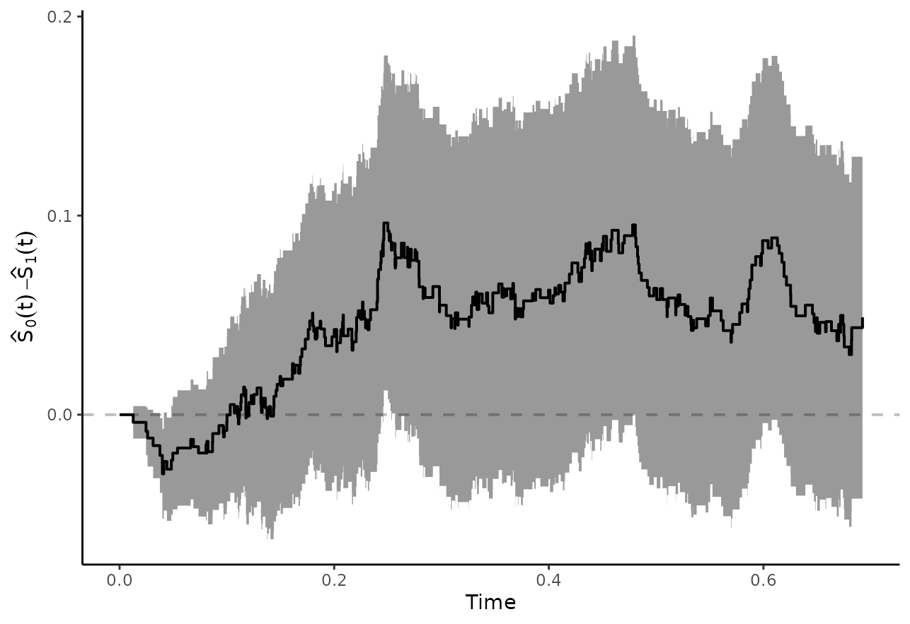

Comparing Adjusted Survival Curves or Cumulative Incidence Curves
Robin Denz
Source:vignettes/comparing_groups.rmd
comparing_groups.rmdIntroduction
The main functions of this package can be used to estimate confounder-adjusted survival curves and confounder-adjusted cause-specific cumulative incidence curves. This is described in great detail in the documentation and in other vignettes of this package. In this vignette we present some possibilities of directly comparing the adjusted survival curves or CIFs instead.
It is important to state right away that there is no single best method to compare the curves. Each one is associated with a different target estimand, which should be chosen mostly based on theoretical considerations.
Adjusted Survival Curves
Throughout this vignette we will mostly be concerned with comparing
two confounder-adjusted survival curves estimated using the
adjustedsurv() function. Situations with more than two
survival curves are not covered directly here, but users may use the
presented methods to perform pairwise comparisons among the possible
pairings. Comparisons of confounder-adjusted cause-specific CIFs can be
performed in a very similar fashion, as described later in this
vignette.
Illustrative Example Data
To illustrate the different ways of comparing two survival curves, we
again simulate some data using the sim_confounded_surv()
function. This time, we set the group_beta argument to 0,
indicating that there is no actual treatment effect here.
library(adjustedCurves)
library(survival)
library(ggplot2)
library(pammtools)
library(cowplot)
set.seed(34253)
data <- sim_confounded_surv(n=500, group_beta=0)
data$group <- factor(data$group)We then use the adjustedsurv() function to estimate the
confounder-adjusted survival curves using inverse probability of
treatment weighting (method="iptw_km", see Xie et
al. 2005). Note that we compute asymptotic confidence intervals
(conf_int=TRUE) and we also perform bootstrapping with 100
replications. The bootstrapping is done here, because some of the
comparison methods require it. In reality, 100 bootstrap samples would
probably not be enough to get stable estimates. We limit this number to
100 here only due to computation time limitations of CRAN.
adjsurv <- adjustedsurv(data=data,
variable="group",
ev_time="time",
event="event",
method="iptw_km",
treatment_model=group ~ x2 + x5,
conf_int=TRUE,
bootstrap=TRUE,
n_boot=100,
stabilize=TRUE)## Loading required namespace: WeightItThe resulting survival curves look like this:
plot(adjsurv, conf_int=TRUE, risk_table=TRUE, risk_table_stratify=TRUE,
risk_table_digits=0, x_n_breaks=10)Visually, there does not seem to be a large difference between the
curves, which is what we would expect because there is no actual
treatment effect and we correctly adjusted for the two confounders
x2 and x5.
Contrasting Survival Probabilities at
The probably easiest way to compare two survival curves is to directly compute their difference (Klein et al. 2007):
or the ratio between them:
at a specific point in time
.
Here,
is the estimated adjusted survival probability at
,
as returned by the adjustedsurv() function. Visually this
is equivalent to the vertical difference between the curves, as
shown here with a blue line segment at
:

These quantities can be estimated directly using the
adjusted_curve_diff() and
adjusted_curve_ratio() functions. For
(arbitrary choice) we could use:
adjusted_curve_diff(adjsurv, times=0.7, conf_int=TRUE)## time diff se ci_lower ci_upper p_value
## 1 0.7 0.04890463 0.04366823 -0.03668352 0.1344928 0.2627507or
adjusted_curve_ratio(adjsurv, times=0.7, conf_int=TRUE)## time ratio ci_lower ci_upper p_value
## 1 0.7 1.238726 0.8510227 1.86518 0.2627507In this case, there seem to be only small differences between the survival curves at . Note that the p-values will always be identical between the two function calls, because they use essentially the same methodology to derive them.
One potential problem of this type of comparison is that it is only concerned with a single point in time. There may be larger differences at other points in time that are neglected when only looking at . We can, however, also plot the difference or ratio curve directly using either (Coory et al. 2014):
plot_curve_diff(adjsurv, conf_int=TRUE, max_t=0.7)
or
plot_curve_ratio(adjsurv, conf_int=TRUE, max_t=0.7)
In this case we also used max_t=0.7 to only show the
curves up to this point (because there are some problems estimating the
confidence intervals beyond this point), but we could also leave this
argument out to show the entire curves.
Adjusted Survival Time Quantiles
Survival time quantiles are defined as the earliest point in time at which the survival probability in a group reaches a specific value . The most popular survival time quantile is the median survival time, which is just the 0.5 survival time quantile. This kind of value can be estimated for adjusted survival curves as well, leading to estimates of the adjusted survival time quantiles. Formally:
where is the estimated adjusted survival function for .
This statistic can be calculated directly from an
adjustedsurv object using the
adjusted_surv_quantile() function. Using the above example,
we may calculate the median survival time using:
adjusted_surv_quantile(adjsurv, p=0.5, conf_int=TRUE)## p group q_surv ci_lower ci_upper
## 1 0.5 0 0.4503628 0.3865120 0.5100232
## 2 0.5 1 0.3997020 0.3349896 0.4404005We may now also compare these values directly, by calculating their difference (Chen & Zhang 2016):
or ratio:
and testing whether this quantity is significantly different from 0 (differences) or 1 (ratios) respectively. This type of difference can be understood visually as the horizontal difference between the curves, as illustrated with the blue line segment in this plot:
This type of difference may also be estimated directly using the
adjusted_surv_quantile() function. Please note that this is
only possible when bootstrapping was performed in the original
adjustedsurv() call, which is the case here. The syntax
when using the difference is as follows:
adjusted_surv_quantile(adjsurv, p=0.5, conf_int=TRUE, contrast="diff")## p diff se ci_lower ci_upper p_value
## 1 0.5 0.05066081 0.03935022 -0.02646421 0.1277858 0.1979431The difference is rather small, with a confidence interval that contains 0 and a relatively large p-value, indicating that there is no difference between the curves, as expected (we simulated the data with no actual group effect). It can be interpreted as the horizontal difference between the two survival curves at . Similar results can be obtained using the ratio of the two median survival times:
adjusted_surv_quantile(adjsurv, p=0.5, conf_int=TRUE, contrast="ratio")## p ratio ci_lower ci_upper p_value
## 1 0.5 1.126746 0.9392345 1.35458 0.1979431Again, since we are testing essentially the same hypothesis here, the p-values will always be identical. Choosing whether to use the ratio or the difference is mostly a matter of personal taste.
Restricted Mean Survival Times
Another summary statistic that may be used to compare two survival curves is the restricted mean survival time (RMST). It is defined as the area under the respective survival curve up to a specific point in time, which can then be interpreted as the mean survival time up to that point (Royston et al. 2013). By using the adjusted survival curve to estimate this quantity, the resulting RMST is also adjusted (Conner et al. 2019). Formally, the RMST is defined as:
where
is again the estimated adjusted survival curve and to is
the value up to which the survival curves should be integrated. The
following plot visually depicts the area in question for
to = 0.7 in our example:

This quantity can be estimated using the adjusted_rmst()
function. Using to=0.7 we may use the following syntax:
adjusted_rmst(adjsurv, to=0.7, conf_int=TRUE)## to group rmst se ci_lower ci_upper n_boot
## 1 0.7 0 0.4407696 0.01544633 0.4104953 0.4710438 100
## 2 0.7 1 0.4097372 0.01431698 0.3816764 0.4377979 100We also set conf_int=TRUE here to obtain the
corresponding confidence intervals. Note that this only works if
bootstrapping was used in the original adjustedsurv() call.
Again, the resulting values seem to be very close to each other, with
overlapping 95% confidence intervals.
As before, we may calculate the difference between the two RMST values:
or the ratio between them:
This may also be done using the adjusted_rmst()
function. The difference and its’ associated confidence interval may be
estimated using:
adjusted_rmst(adjsurv, to=0.7, conf_int=TRUE, contrast="diff")## to diff se ci_lower ci_upper p_value
## 1 0.7 0.03103241 0.02106098 -0.01024636 0.07231118 0.1406284The ratio can be estimated in a similar fashion, using:
adjusted_rmst(adjsurv, to=0.7, conf_int=TRUE, contrast="ratio")## to ratio ci_lower ci_upper p_value
## 1 0.7 1.075737 0.9760984 1.185515 0.1406284Again, the p-values are identical. This method removes some of the
arbitrariness of choosing a single point in time to perform the
comparison, as was done using simple differences or ratios. However, it
introduces a new limitation, which is the choice of to. We
may also plot the RMST as a function of this value, by calculating it
for a wide range of different to values. This is called a
restricted mean survival time curve (Zhao et al. 2016) and can
be done in this package using the plot_rmst_curve()
function.
Here we simply plot the RMST curves per group:
plot_rmst_curve(adjsurv, conf_int=TRUE)
But we may also directly plot the difference:
plot_rmst_curve(adjsurv, conf_int=TRUE, contrast="diff")
or their ratio:
plot_rmst_curve(adjsurv, conf_int=TRUE, contrast="ratio")which again shows no difference between the curves, as expected.
Bootstrap Hypothesis Testing
A different but closely related summary statistic to compare two survival curves is the area between two survival curves in some interval from to , defined as:
The following plot visually shows the area in question using the
plot_curve_diff() function:
plot_curve_diff(adjsurv, fill_area=TRUE, integral=TRUE, integral_to=0.7,
max_t=1, text_pos_x="right")## Loading required namespace: ggpp## Registered S3 methods overwritten by 'ggpp':
## method from
## heightDetails.titleGrob ggplot2
## widthDetails.titleGrob ggplot2
In expectation, this quantity should be 0 if there is no difference
between the two survival curves. As such, it has been used in hypothesis
tests in the past (Pepe & Fleming 1989). Since there is no known way
to estimate its’ standard error directly, we need to estimate it using
bootstrapping. The adjusted_curve_test() function directly
implements this:
adjtest <- adjusted_curve_test(adjsurv, from=0, to=0.7)
adjtest## ------------------------------------------------------------------
## Test of the Difference between two adjusted Survival Curves
## ------------------------------------------------------------------
##
## Using the interval: 0 to 0.7
##
## ABC ABC SE 95% CI (lower) 95% CI (upper) P-Value N Boot
## 0 vs. 1 0.031 0.0205 -0.003 0.0699 0.15 100
## ------------------------------------------------------------------Again the confidence interval includes 0 here and the p-value is
rather larger, indicating no difference between the curves. Since the
survival curves do not cross at any point in time, the area between the
curves is also equal to the difference between the corresponding RMST
values with to=0.7 from earlier. Note that the p-value
should be close, but not necessarily identical (because a slightly
different computation technique is used).
We may create a spaghetti-plot of the bootstrapped comparisons using
the associated plot() function:
plot(adjtest, type="curves")which looks similar to the plot created using
plot_curve_diff() earlier.
Adjusted Cumulative Incidence Curves
Most of the methods mentioned above can be used in an equivalent
fashion for adjusted cause-specific cumulative incidence curves. There
are only two main difference. First, the
adjusted_surv_quantile() function cannot be used, because
such statistics are not really meaningful for cause-specific estimates.
Secondly, the adjusted_rmst() function may also not be
used, but a very similar function which estimates the adjusted
restricted mean time lost may be used instead
(adjusted_rmtl()). Everything else is pretty much the same,
which is why it is not shown here explicitly. For more details and
examples, please see the associated documentation pages.
Discussion
The most important takeaway from this vignette is, that there is no single way to compare two survival curves. Consequently, there is no single p-value that can be used.
In the example presented here, all comparison methods show pretty much the same result: that there is no difference between the two adjusted survival curves (which corresponds to the known truth here). This may not always be the case in real data analysis. Each of the comparison methods asks fundamentally different questions about the data, resulting in different hypotheses being tested. For example, it may be the case that there indeed is a difference between survival probabilities at , but there is no difference in median survival time.
Users need to make sure that the choice of comparison method is in accord with the causal question they want to answer. It is also good practice to fix the choice of comparison method before looking at the data, as is commonly done for randomized controlled trials. Comparing the curves in all sorts of ways and only reporting those comparisons where a “significant” difference was found is really bad practice, as it results in an inflation of type I error.
References
Robin Denz, Renate Klaaßen-Mielke, and Nina Timmesfeld (2023). “A Comparison of Different Methods to Adjust Survival Curves for Confounders”. In: Statistics in Medicine 42.10, pp. 1461-1479.
Sarah C. Conner, Lisa M. Sullivan, Emelia J. Benjamin, Michael P. LaValley, Sandro Galea, and Ludovic Trinquart (2019). “Adjusted Restricted Mean Survival Times in Observational Studies”. In: Statistics in Medicine 38, pp. 3832-3860.
Michael Coory, Karen E. Lamb, and Michael Sorich (2014). “Risk-Difference Curves can be used to Communicate Time-Dependent Effects of Adjuvant Therapies for Early Stage Cancer”. In: Journal of Clinical Epidemiology 67, pp. 966-972.
Zhongxue Chen and Guoyi Zhang (2016). “Comparing Survival Curves based on Medians”. In: BMC Medical Research Methodology 16.33.
Patrick Royston and Mahesh K. B. Parmar (2013). “Restricted Mean Survival Time: An Alternative to the Hazard Ratio for the Design and Analysis of Randomized Trials with a Time-To-Event Outcome”. In: BMC Medical Research Methodology 13.152.
John P. Klein, Brent Logan, Mette Harhoff, and Per Kragh Andersen (2007). “Analyzing Survival Curves at a Fixed Point in Time”. In: Statistics in Medicine 26, pp. 4505-4519.
Margaret Sullivan Pepe and Thomas R. Fleming (1989). “Weighted Kaplan-Meier Statistics: A Class of Distance Tests for Censored Survival Data”. In: Biometrics 45.2, pp. 497-507.
Jun Xie and Chaofeng Liu (2005). “Adjusted Kaplan-Meier Estimator and Log- Rank Test with Inverse Probability of Treatment Weighting for Survival Data”. In: Statistics in Medicine 24, pp. 3089-3110.
Lihui Zhao, Brian Claggett, Lu Tian, Hajime Uno, Marc A. Pfeffer, Scott D. Solomon, Lorenzo Trippa, and L. J. Wei (2016). “On the Restricted Mean Survival Time Curve in Survival Analysis”. In: Biometrics 72.1, pp. 215-221.